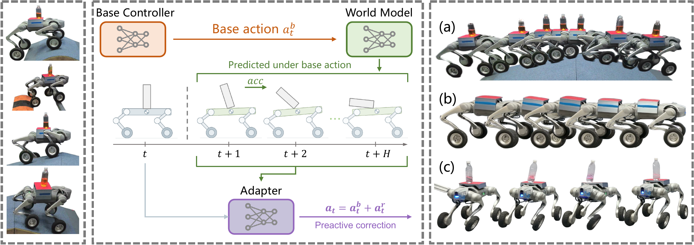
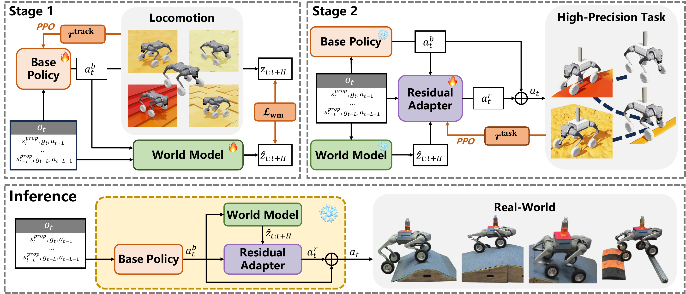

Abstract
What if a robot could correct a disturbance before the deviation becomes observable?
We present LocoWM, a world-model-guided framework that helps robots maintain precise control during locomotion. A world model predicts the effects of a base controller’s proposed action, and a residual adapter uses these predictions to correct anticipated deviations before they become observable. Two-stage training separates learning to move from learning to refine control, allowing the adapter to focus on precision. Across terrain leveling, acceleration compensation, and push recovery, LocoWM improves control precision and disturbance robustness over end-to-end and reactive residual baselines. Real-world demonstrations show a wheeled quadruped transporting unsecured payloads, with a simulation extension to humanoid tray transport.

Method
LocoWM: Preactive Control
A base controller, a predictive world model, and a residual adapter work together to correct anticipated deviations.
-
Move
The base policy proposes a command-following locomotion action.
-
Predict
The world model forecasts future task substates from history and the base action.
-
Adapt
The residual adapter corrects anticipated deviations before execution.

Real-world experiments
Real-world demonstrations.
Unsecured payloads, uneven terrain, acceleration, and external pushes on a Unitree Go2-W.
Terrain leveling
Acceleration compensation
Push recovery
Simulation
Simulation experiments.
Task-state traces show how posture changes with terrain, acceleration, and disturbances.
Beyond wheeled locomotion
Same idea, Another embodiment.
LocoWM also supports bimanual tray transport with a Unitree G1 humanoid in simulation, keeping an unsecured payload stable during walking.
Simulation extension · Appendix D, Table 6.
Compared with 91.0% for ReST-RL.
Citation
BibTeX
@misc{zhao2026locowm,
title={LocoWM: High-Precision Locomotion through World-Model-Guided Residual Adaptation},
author={Zijie Zhao and Shengqian Chen and Xiaoxu Wang and Han Jiang and Yuanheng Zhu and Dongbin Zhao},
year={2026},
eprint={2609.39179},
archivePrefix={arXiv},
primaryClass={cs.RO},
url={https://arxiv.org/abs/2609.39179},
}